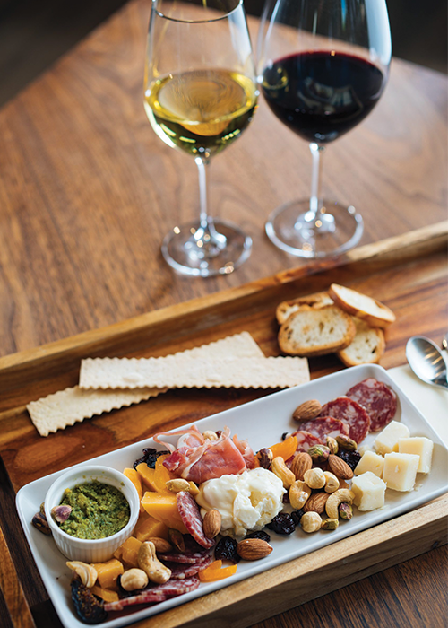

Create A Charcuterie And Wine Pairing
There’s a reason wine and charcuterie boards are so popular: they are a match made in culinary heaven. Imagine platters decked with aged cheeses, salami, and nuts. It’s the ultimate balance of flavors and textures that make it a gastronomic delight at our tasting room. There is a wide range of wines that pair perfectly with a variety of cheese, cured meats, and everything in-between. That’s why we’ve put together a useful guide to help you create your own scrumptious charcuterie board pairings. Once you’ve aced the basics below, you’ll be treating your tastebuds and friends for years to come.
The texture, fat, salt, and spice of all the delicious nibbles on a charcuterie board can help balance and soften the flavors of wine – and vice versa. Typically, the salty and savory flavors of cheese enhance the fruit aromas of sparkling and light-bodied white wines like Prosecco. Bright, acidic wines like Sauvignon Blanc cut through the richness of creamy cheese. Rich cured meat and nuts counterbalance the tannins in bold wines like Cabernet Sauvignon. Wine betters food, food betters wine. You get the idea.